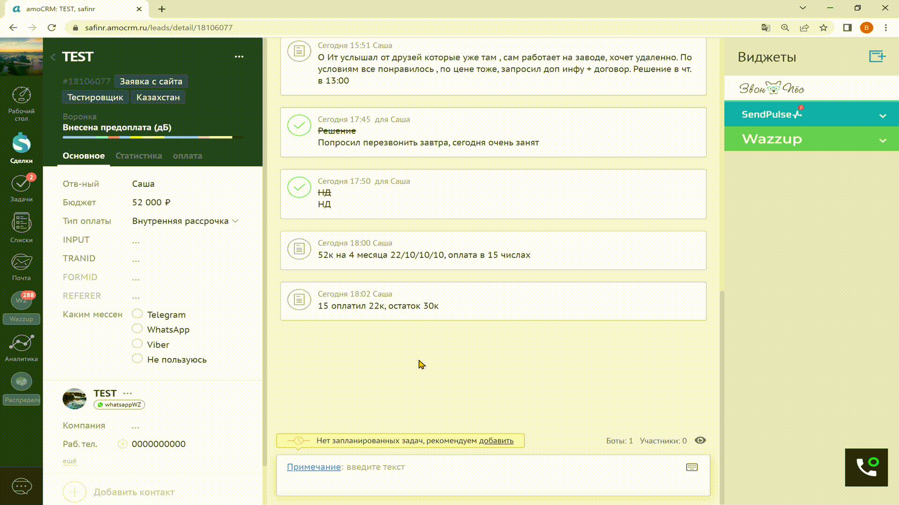

Статусы

- Неразобранное
Другими словами наши любимые заявки с сайта)
- Входящая заявка
Входящий трафик по лид формам, основной вал заявок.
- Квалифицированная заявка
Сюда заявки попадают если 1) Они ответили на сообщение бота (выбор вводного урока), 2) Второй вид заявок с сайта, обозначаются тегом "WZ (Новый канал WA ****)"
- Брак
Сюда мы помещаем заявки у которых не указан номер телефона
- Для звонопса
В данным момент не используется
- Нажали 1
В данным момент не используется
- Загасились
Когда клиент гаситься(перестает выходить на связь без причины) можно поместить на время в этот статус, сразу после перехода заявки в этот статус отправляется сообщение с вопросом что ему помешало при выборе нашей школы
- На передержку
Технический статус, используем в разное время по разному назначению
- Ответил на смс перед звонком
В данным момент не используется
- Недозвон
Если не удалось дозвониться до клиента мы помещаем его в этот статус. Автоматически бот оправит сообщение с вопросом когда связаться с клиентом
- Начал переписку после нд
Тот же Недозвон только бот ничего не отправляет, помещаем сюда если нет необходимости в автоматической отправке
- Перезвонить
Вы смогли установить контакт с клиентом и вышли на доп. касание
- Отложенные сделки
Помещаем клиентов которые сейчас не могут но хотят потом (при условии что вы сделали все возможное)
- Решение
Когда клиент ушёл принимать окончательное решение
- Выставлен счет
Выставили счёт на полную оплату\рассрочку
- Внесена предоплата
Данный статус используеться когда клиент проходит по внутренней рассрочке, статус не меняеться пока клиент не выплатит полную стоимость курса
- Успешно реализовано
Когда клиент оплатил курс
- Закрыто не реализовано
Сюда мы помещаем клиентов по разным причина
Ведение заявки\карточки клиента
-
Проверяем ответственного, если берете заявки коллег обязательно ставите себя ответственным
-
Проставляем теги заявкам с сайта если автоматически не подтянулось, заявкам с телеграмма (от Алишы), с канала WZ . Необходимые теги: Заявка с сайта, страна, frontend\java\python и т.д. Так же пока что проставляем теги стран и в лид форме если я не успел их сам проставить.
-
Совершаете звонок через мессенджер и обязательно прикрепляете скриншот звонка (не относиться к звонкам по стране)
-
По завершнению звонка составляете примечание где описываете результаты разговора. Примечания по типу "Все ок , решение в четверг" не принимаються , сами потом запутаетесь кто это и про что договорились. Пример примечания "О Ит услышал от друзей которые уже там , сам работает на заводе, хочет удаленно. По условиям все понравилось , по цене тоже, запросил доп инфу + договор. Решение в чт. в 13:00"
-
После примечания выставляем задачу на время как и договорились с клиентом.
-
Меняем статус в зависимости от результата , подробнее о статусах Тык
-
Заполняем ежедневную отчетность , ссылка Тык
Работа с задачами
-
После звонка клиенту так же выгружаем скрин (не относиться к звонкам по стране)
-
Задачу закрываем с актуальным комментарием, к примеру "Попросил перезвонить завтра, сегодня очень занят" и выставляем новую задачу на дату и время которую оговорили
-
Задачу удалять запрещенно! Только дубль. Закрывать задачу без коммента также нельзя , если не дозвонились в результате задачи ставите нд.
Работа с внутренней рассрочкой
-
В примечаниях обязательно пишем условия внутренней рассрочки для клиента , пример "52к на 4 месяца 22/10/10/10, оплата в 15 числах" Тип оплаты "Внутренняя рассрочка"
-
 После оплаты так же фиксируем данную инфу в примечаниях "15 оплатил 22к, остаток 30к" и выставляем задачу на дату след. платежа, не забываем менять статус на актульаный в конкретном случае используем "Внесена предоплата"
После оплаты так же фиксируем данную инфу в примечаниях "15 оплатил 22к, остаток 30к" и выставляем задачу на дату след. платежа, не забываем менять статус на актульаный в конкретном случае используем "Внесена предоплата" -
Обязательно вносим инфу о графике платежей в таблицу дебета по ссылке Тык
-
После того как клиент оплатил всю сумму меняем статус на "Успешно реализовано"
Общие правила работы
(список может обновляться)
(список может обновляться)
-
Если Ваш рабочий день начинается в 10:00 то как минимум в 10:10 уже должен быть совершен первый звонок
-
Летучки проводяться каждый день в 11:00 и 17:30
-
Новые заявки (кроме заявок с сайта) автоматически распределяются между менеджерами. Период в который берутся заявки не может превышать 1 часа
-
За рабочий день у менеджера должно быть не менее 50 звонков либо же 3.5 часов диалогов
-
Заявку ведем на протяжении минимум 3 касаний, в случае заявки с сайта минимум 5 касаний
-
Воровать чужие заявки ЗАПРЕЩЕННО, кроме случаев когда Вам отдают заявку \ статуса закрыто
-
При работе с задачами важно понимать что если Вы договорились созвониться в 15:00 то звонок и должен быть в 15:00, не через час \ день \ неделю \ месяц.
-
Важно не допускать просрочек задач, планируйте свой день так что бы у Вас не было к примеру на 15:00 10 созвонов по решениям
-
Когда работаем с задачами ЗАПРЕЩЕННО просто так переносить задачи
-
Чтобы все успевать у Вас должно быть в пулле порядка 50 задач + новые , если все вовремя делать то можно избежать появления "Сундука"
-
Если у Вас закончились задачи \ новые заявки а продавать еще хочеться \ надо Вы всегда можете взять заявки со статуса "Закрыто не реализовано", для таких сделок вы можете предлагать 40% скидку. Если надо помощь обращайтесь ко мне
-
Заявки с сайта\канала WZ\телеграмма (от Алиши) обрабатываються в первую очередь. Следующие по приоритету "Квалифицированная", "Входящая"
-
Заявки с сайта делятся между всеми менеджерами. В данный момент работаем 40%/30%/30%
-
Если заявку с сайта \ дебет с нее, посчитали как личную продажу SM сделавший так не получит свою "долю"
-
Если ваша заявка с сайта после беседы с Вами хочет привести друга, то "друг" уже будет вашей личной продажей которая не разбивается.
-
По окончанию рабочего дня SM проверяет свою рабочую область (СРМ) на предмет проебов , также сбрасывает скриншот с ежедневной отчетностью + примечания в телеграмм канал "ОП Максима"